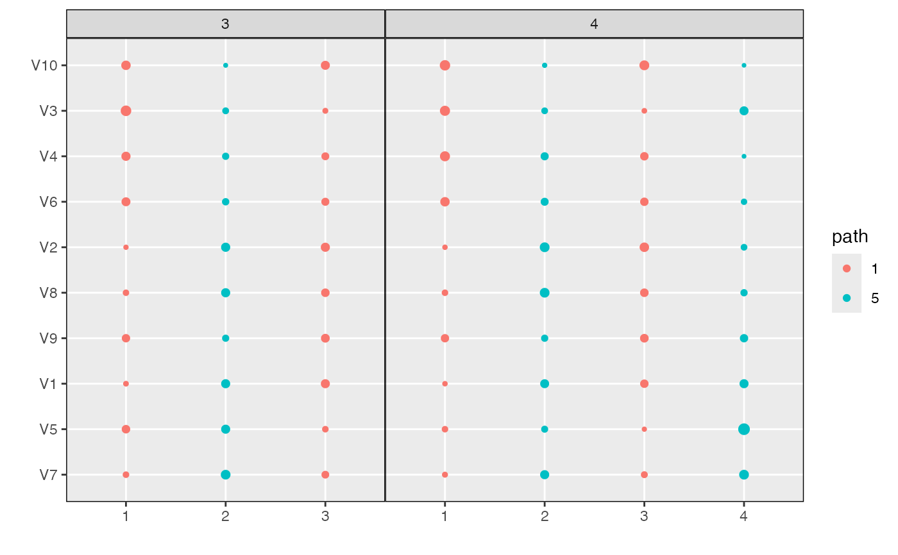
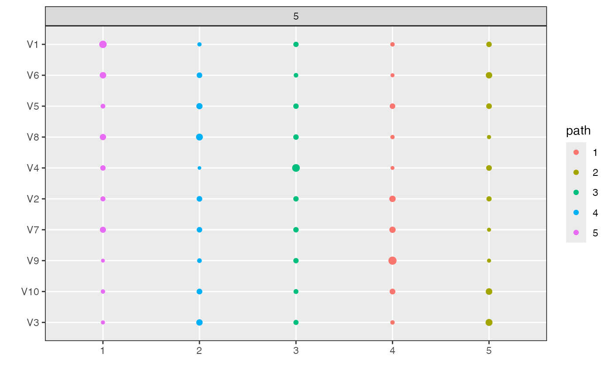
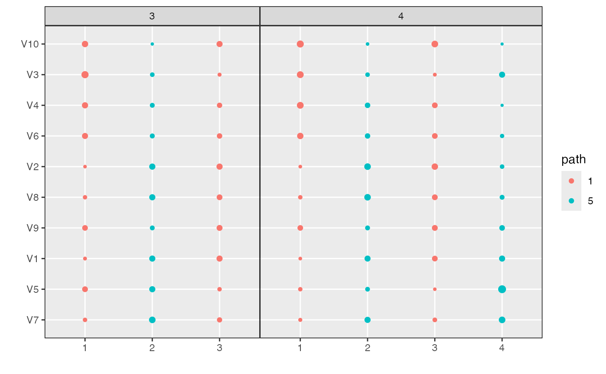
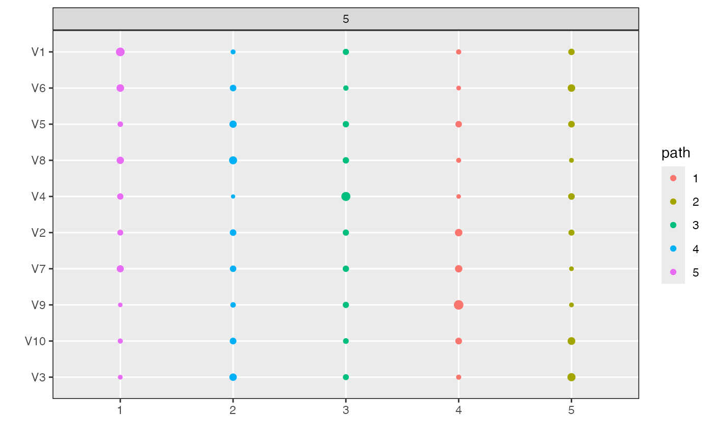

Plot Topics Heatmap
plot_beta.RdThis function plots the \(\beta_{kd}^{m}\) topic parameters across models
\(m\), topics \(k\), and dimensions \(d\). It takes as input a raw
alignment object and then returns a circle heatmap. The size of each circle
corresponds to the value \(\beta_{kd}^m\) for the model in panel \(m\),
topic in column \(k\), and dimension in row \(d\). The plot can be
restricted to only a subset of models by using the models argument,
which may be either a vector of model names or numeric indices into the list
of models. The dimensions can be filtered by using the n_features or
min_beta arguments -- by default, only dimensions with at least one
topic satisfying \(\beta_{kd}^m > 0.025\) are displayed.
plot_beta(
x,
models = "all",
filter_by = "beta",
x_axis = "label",
threshold = 0.001,
n_features = NULL,
beta_aes = "size",
color_by = "path"
)Arguments
- x
(required) An alignment class object resulting from
align_topics.- models
Which models to display in the heatmap? Defaults to
"all", meaning that all models are shown. If given"last", only the last model in the models list will be plotted. If given a vector of characters, it will plot only models whose names in the original models list match. Similarly, if given a list of integers, only the models lying at those indices in the original model list will be visualized.- filter_by
(optional, default =
"beta") a character specifying if the data (beta matrices) should be filtered by the average"beta"across topics or by the"distinctiveness"of the features.- x_axis
(optional, default =
"index") a character specifying if the x-axis should display topic indices ("index") such that they match the alignment plot order or topic names ("label").- threshold
(optional, default = 0.001) Words (features) with less than this average beta or distinctiveness across all topics are ignored
- n_features
(optional) alternative to
threshold. The maximum number of words (features) to display along rows of the plot.- beta_aes
Should word probabilities within a topic be encoded using circle size (
"size") or opacity ("alpha") ? Defaults to"size".- color_by
(optional) What should the color of topics and weights encode? Defaults to 'path'. Other possible arguments are 'coherence', 'refinement', or 'topic'.
Value
A ggplot2 object describing the word probabilities associated with each topic across models of interest.
Examples
library(purrr)
data <- rmultinom(10, 20, rep(0.1, 20))
lda_params <- setNames(map(1:5, ~ list(k = .)), 1:5)
lda_models <- run_lda_models(data, lda_params)
#> Using default value 'VEM' for 'method' LDA parameter.
#> Using default value 'VEM' for 'method' LDA parameter.
#> Using default value 'VEM' for 'method' LDA parameter.
#> Using default value 'VEM' for 'method' LDA parameter.
#> Using default value 'VEM' for 'method' LDA parameter.
alignment <- align_topics(lda_models)
plot_beta(alignment)
 plot_beta(alignment, models = c(3, 4))

plot_beta(alignment, models = "last")

plot_beta(alignment, models = c(3, 4))

plot_beta(alignment, models = "last")
